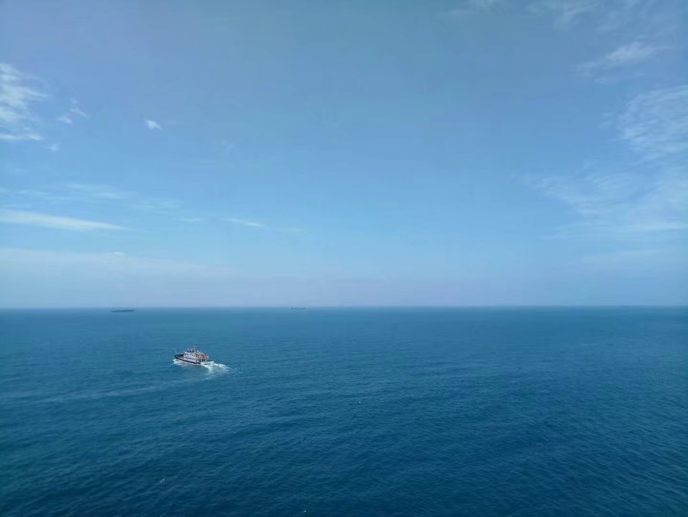

三亚的海
三亚是具有热带海滨风景特色的国际旅游城市,又被称为“东方夏威夷”。
三亚市区三面环山，北有抱坡岭，东有大会岭，虎豹岭和海拔393米的高岭（狗岭）。南有南边岭，形成环抱之势。
山岭绵延起伏、层次分明；同时，山脉的延伸将市区分成若干青山围成的空间。为城市不同地区提供了各具特色的空间景观环境。 三亚面临南海，海湾较多，众多海湾各有佳景。处于市区的大东海，小东海，三亚湾与市民生活的关系最为密切
三亚- 东方夏威夷
- 国际旅游城市
- 热带海滨风景
- 东方夏威夷
- 国际旅游城市
- 热带海滨风景
三亚是具有热带海滨风景特色的国际旅游城市,又被称为“东方夏威夷”。
三亚市区三面环山，北有抱坡岭，东有大会岭，虎豹岭和海拔393米的高岭（狗岭）。南有南边岭，形成环抱之势。
山岭绵延起伏、层次分明；同时，山脉的延伸将市区分成若干青山围成的空间。为城市不同地区提供了各具特色的空间景观环境。 三亚面临南海，海湾较多，众多海湾各有佳景。处于市区的大东海，小东海，三亚湾与市民生活的关系最为密切
三亚